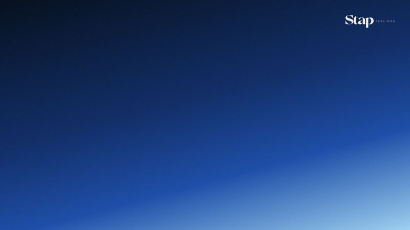
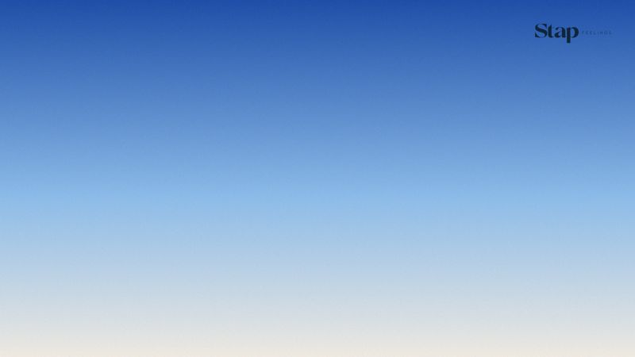
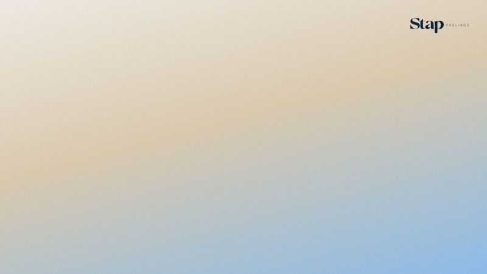
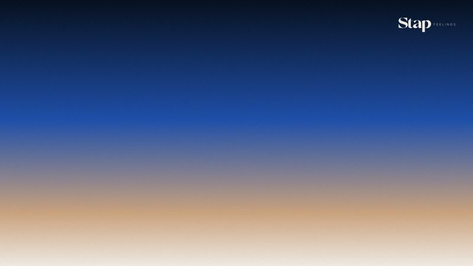
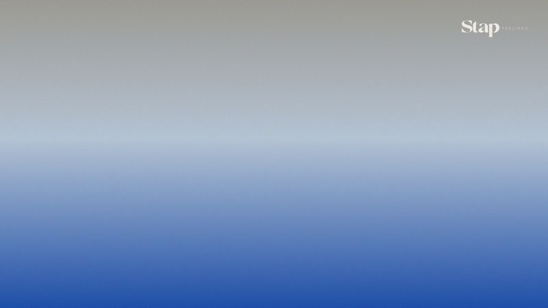
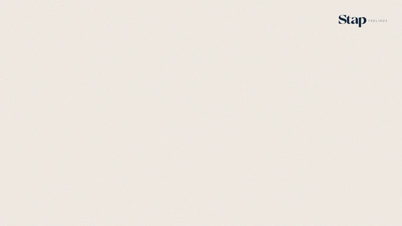
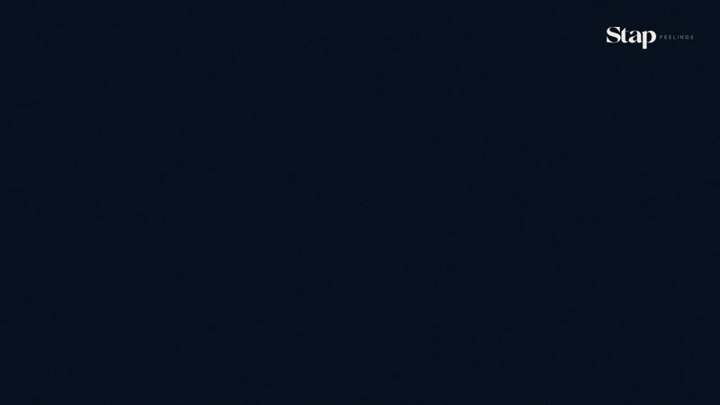

Oito fundos com as atmosferas da marca e o logo discreto no canto. Funcionam no Teams, Zoom e Google Meet.







Na reunião: Mais › Efeitos e avatares › Adicionar novo › escolha o arquivo.
Configurações › Planos de fundo e efeitos › + › Adicionar imagem.
Na chamada: menu ⋮ › Aplicar efeitos visuais › Planos de fundo › Adicionar.
O logo pode aparecer invertido só para você. Quem está na reunião vê certo.